[1] によると、Wolfram Languageというものを使って、グラフの平面埋め込みを求めることができる。Wolfram Languageは数学、機械学習といった科学的用途に特化したプログラミング言語で、普通の言語にはデフォルトで備わっていないような高度な機能が使用できる。この言語は、最初はMathematica内で使用するために開発されたが、その後さらに様々な機能が付け加えられ、独立して今の形になった。したがって、今回はWolfram Languageを用いてグラフの平面埋め込みができるか判定し、できるのであれば、その埋め込みの一例を求めてみる。
まず、Wolfram Languageの実行環境を用意する。これには、公式サイトのPlayground(https://www.wolfram.com/language/#playground)にアクセスする,Wolfram CloudのNotebook(https://www.wolframcloud.com/)を使う、もしくはWolfram Engine(https://www.wolfram.com/engine/)をダウンロードする必要がある。
Playgroundを使用した場合は、コードをブロックに書いて、右端のRunを押せば実行できる。実行例をFigure 1 に示す。
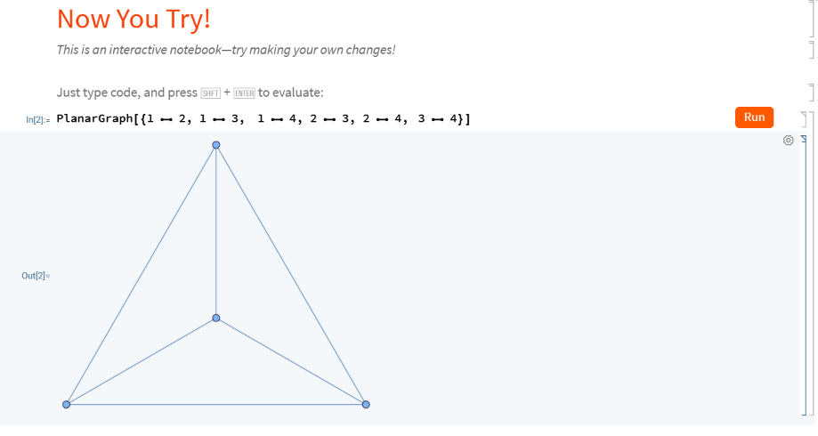
(https://www.wolframcloud.com/)にアクセスし、ログインする（アカウントがなければ作成する）。すると次のFigure 2 のような画面に遷移する。
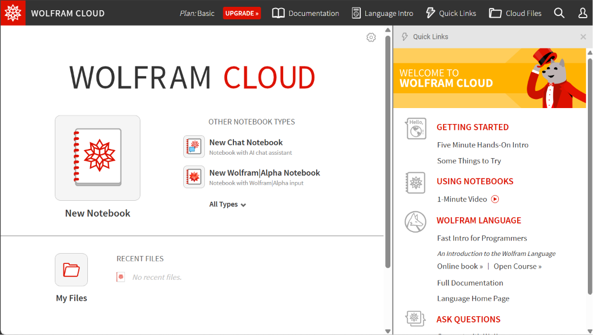
New Notebookを押し、左側の画面にコードを貼りつける。Shift+Enter(もしくは上のEvaluation）で実行する。
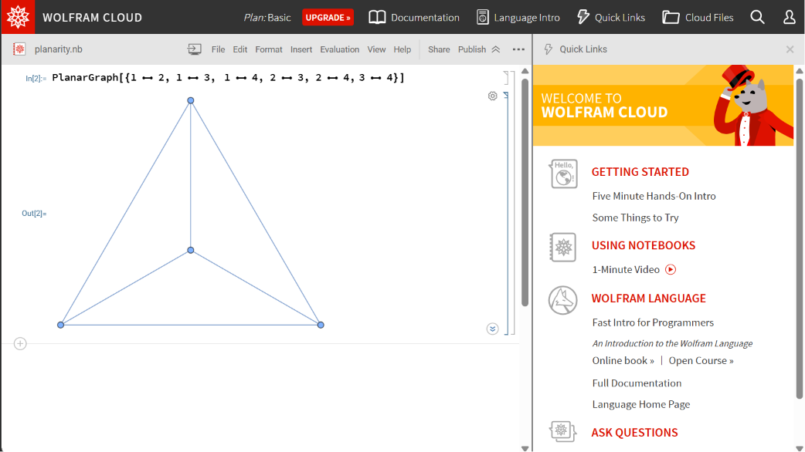
Wolfram Engineを使用する場合は、[2] を参考にしながら進めると良い。ここでは、それに従いながら、[2] に書かれていないもう少し先(VS Code用拡張機能の導入)までを説明する。
まず最初に、Wolfram Engineをダウンロードしなければならない。したがって、公式サイト(https://www.wolfram.com/engine/)からWolfram Download Managerをダウンロードし起動する。ダウンロードボタンを押した後もまだ公式サイトは閉じないこと。（次のステップで戻ってくる）私はWindows 10(21H2)+用のバージョン15.0のWolfram Download Managerをダウンロードした。（別のパッケージマネージャーを使う方法もある）そのダウンロードしたインストール用exeファイルを起動後、Wolfram Engineのダウンロードが始まるのだが、普通に2.16GB分のダウンロードを要求されるので、ディスク残量と次の予定の時間には注意しておくこと。
この間に、Wolfram Engineを使うのに必要なライセンス(License)を取得する。先ほどの公式サイトに戻ると、ページの内容が変化しており、次のFigure 4 のようなページになる。ページ中央のGet your licenseボタンを押すと、別のページ(https://account.wolfram.com/access/wolfram-engine/free)に遷移する。Wolfram IDを作成するよう要求されるので作成する。（持っている場合はログインしておく）
するとこのページ(Figure 5)に遷移するはず（もし遷移しなければ、https://account.wolfram.com/access/wolfram-engine/free に手動で移動する ）なので、利用規約に同意しGet licenseを押す。
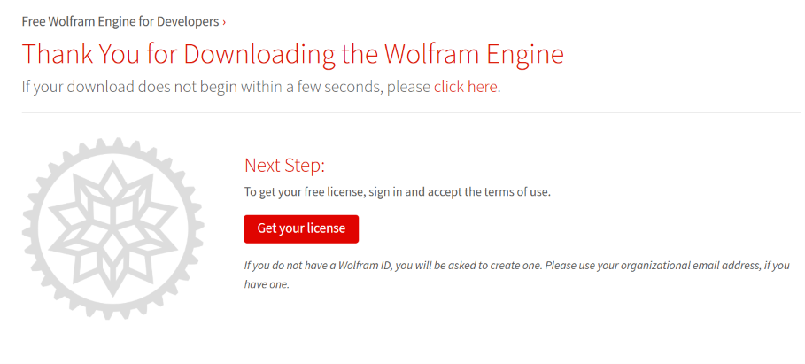
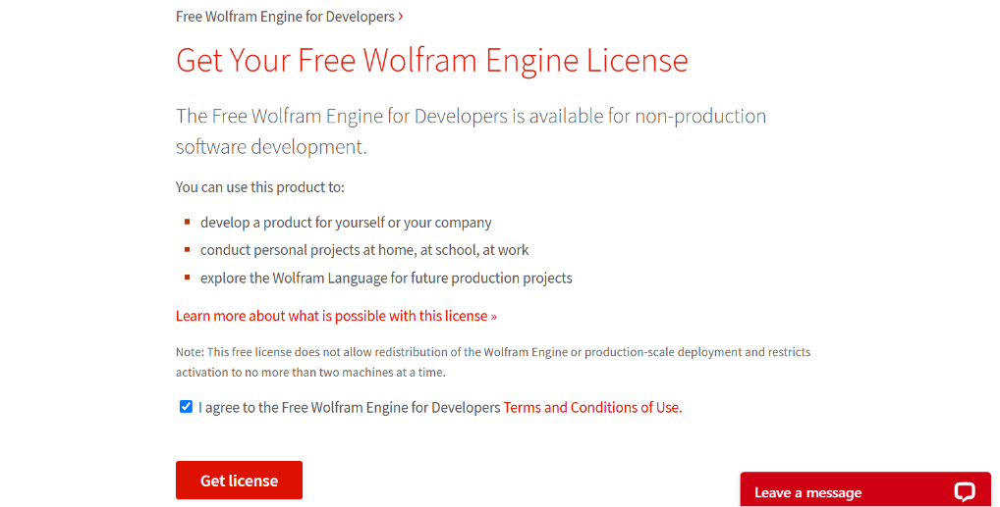
次にWolfram Download Managerのウィンドウに戻り、（ダウンロードが終わるのを待って、）Wolfram Engineをウィンドウ内のボタンから起動しセットアップを実行する。今度はさらに7GBくらい要求されるので、暇つぶしできるものを用意しておくこと。
ダウンロード後、ようやくWolfram Engineが起動する。（起動しない場合は Wolfram Scriptを検索して手動で起動する）Figure 6 のような画面が開き、今度はWolfram ID(email)とそのpasswordを要求されるので、頑張って入力する。
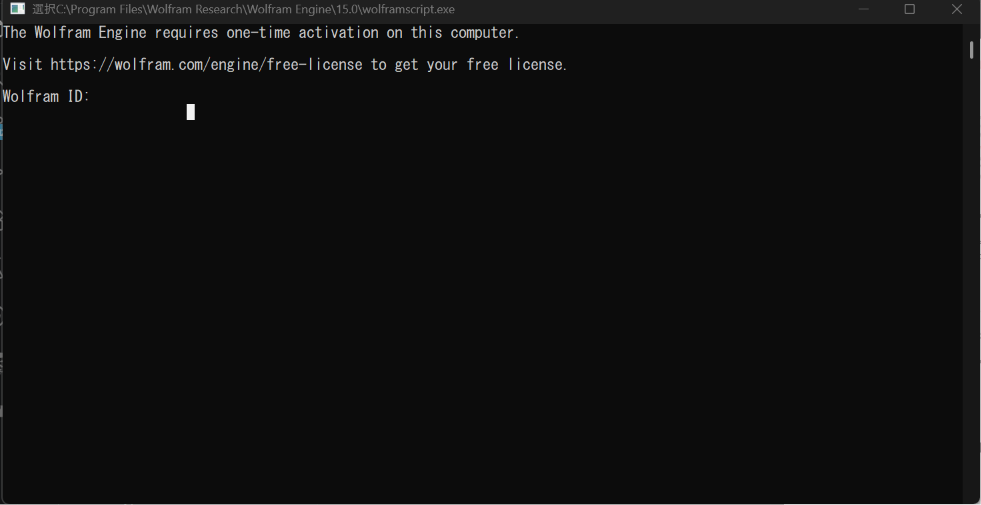
入力し終えると、ようやくWolfram EngineがActivatedになり、使えるようになる。1 ここまでが [2] の内容である。
さてWolfram Engineをどう使えばいいのかだが、PlaygroundやNotebookとは異なり、コマンドライン上でそのまま例をコピーしてもグラフを描画してくれない。したがってさらに外部ツールを用いる必要がある。今回はVSCode上にWolfram Language拡張機能(WolframResearch.wolfram, Figure 7 )をインストールする。Figure 7 に示されているように、同じ名前の拡張機能が複数あるので、Wolfram Researchが提供しているものを選ぶ。
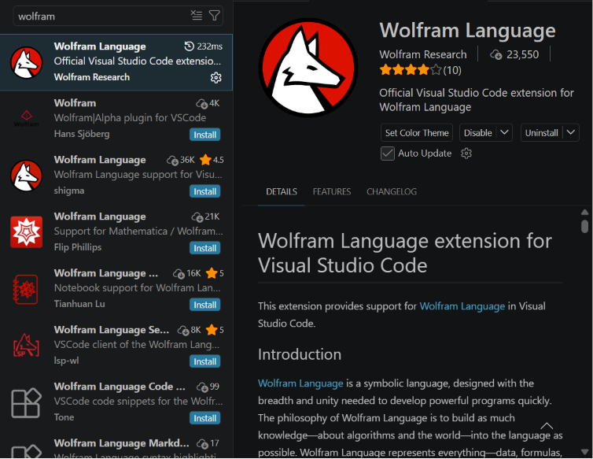
本来はこの拡張機能をインストールすれば自動的にWolfram Engineの場所を見つけてくれるはずだが、私の環境では上手くいかずエラーが出た2ので、手動で設定する。
Wolfram: System PathをC:\Program Files\Wolfram Research\Wolfram Engine\15.0に設定しなおす。そして、再起動するとVSCode内でWolfram Languageを使えるようになる。
拡張機能が準備できたので、適当なファイル名でファイルを作り、拡張子を.vsnbにする。（planarity.vsnbとか）そして、そのファイルを開くとFigure 8 のように表示される。
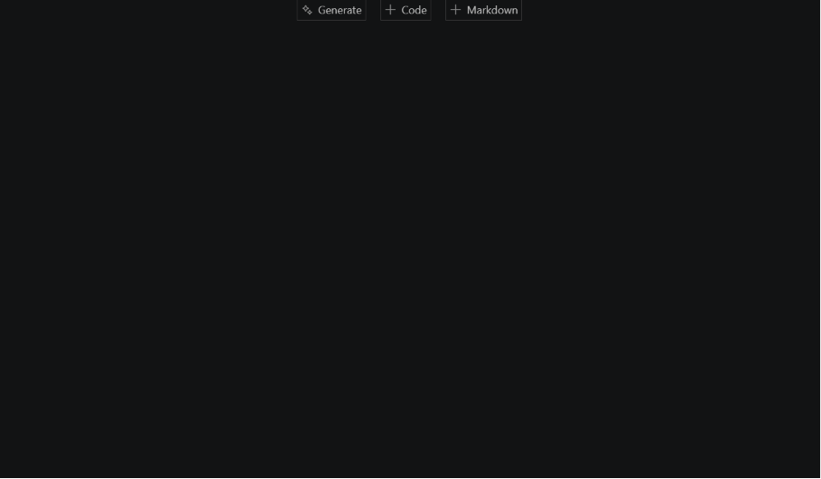
上部中央の+Codeを押す。そして、コードを貼って左端の三角形を押すと実行される。実行結果はFigure 9 のようになる。
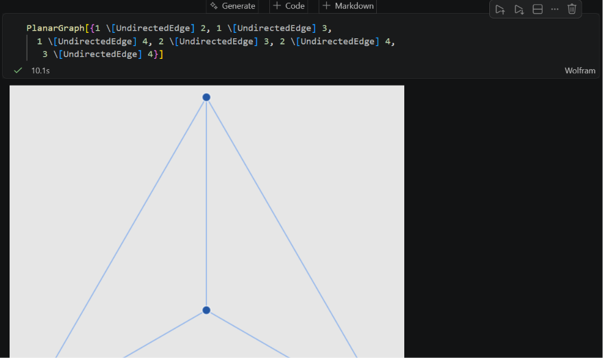
まずは、あえて平面埋め込みできないグラフ、（頂点数5の完全グラフ）を平面埋め込みさせてみる。
このグラフはWolfram Language側のプリセットとしてCompleteGraph[頂点数]という形ですでに用意されている。([3] を参照)というわけで実際に埋め込みを試みる。
実行コード:
g = CompleteGraph[5]
PlanarGraph[EdgeList[g]]実行結果:
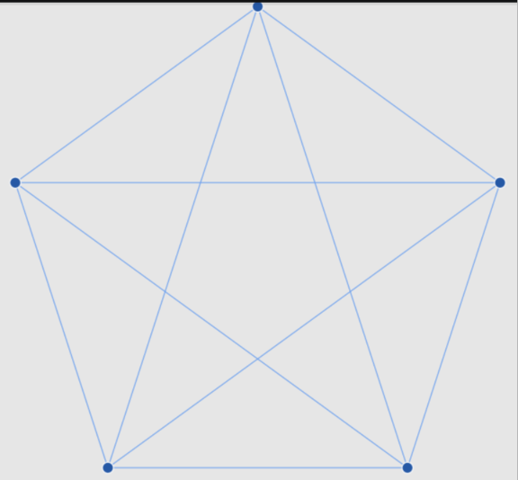
PlanarGraph::nplanar: Graph[{1 2, 1 3, 1 4, 1 5, 2 3, 2 4, 2 5, 3 4, 3 5, 4 5}] is not a planar graph.
ちょっと文字化けしているけれども、しっかりとエラーが出て平面埋め込みできなかった。
最後に、適当なグラフの平面埋め込みを表示させる。結果はFigure 10 に示す。
実行コード:
{GridGraph[{2,3,2}],PlanarGraph[EdgeList[GridGraph[{2,3,2}]]]}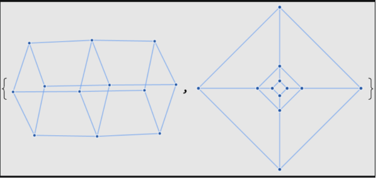
Typstを私はLaTeXの代替として愛用している。しかし、はてなブログはLaTeXの一部分しかサポートしていないし、Typstがサポートしている他の書き出し形式はpdf,pngとsvgしかない。しかし、pdfにして公開するのは個人的にはあまり好きではない。というのも、pdfは紙への印刷用に最適化されているため、画面上で読むときに不便だからだ。特に、一度pdfにしてしまうと、そのデータを再び取り出すのが非常に大変になるのが好ましくない。（普通の文章であればそれなりにコピペして再利用できるが、見出しや箇条書きといった文章構造が崩れてしまうし、そもそも、図表や数式はコピペできないことが多い。)というかそもそも、はてなブログにpdfを上げることができない。かといって画像データで出力してブログにするのはさすがに論外である。そうなると、困ってしまってわんわんわわん わんわんわわん。3
しかし、およそ一年半前、Typst 0.13がリリースされた。それは黒船であった。pdf,png,svgがさながら三国志のように争いながら鎖国体制を築いていた、我らが島Typstに、HTMLという新しい国がやってきたのである。
さてでは実際にHTMLに書き出してみよう。適当なサンプルデータ（Listing 1） を用意したので、そのデータを実際にTypst 0.13でPDF(Figure 11)とHTML(Figure 12)で書き出してみる。
#import "@preview/cetz:0.5.0"
#set text(lang: "jp")
私は文章です。#footnote("我は脚注なり")
凄い数式:$f(x) = 1/x^2 sin (1/x)$
#figure(caption: "I am a table", table(
columns: 2,
table.header("桁", "数"),
"1", "3",
"2", "1",
"3", "4",
))
#figure(caption: "吾輩は図である", html.frame(cetz.canvas({
import cetz.draw: *
catmull((-0.90, 1.65), (-1, 0), (1, 0), (0.90, 1.65), (0, 2), close: true, name: "i")
for-each-anchor("i", name => {
circle("i." + name, radius: .1, fill: blue)
})
})))
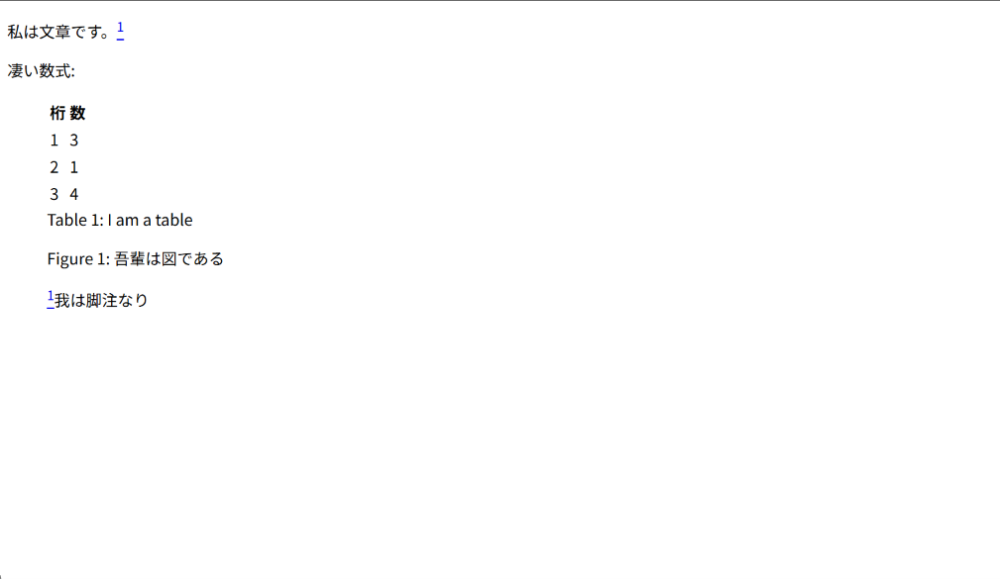
そう、このHTML出力は実験的な機能なので、まだ数式や図が上手く出力できないのである。というわけで黒船は沈みましたとさ。ちゃんちゃん。
ところがどっこい。およそ半年前くらいにリリースされた0.15から実はHTML出力が数式に対応した。ちゃんと画像形式ではなくMathML形式で出力されるため、構文情報を失わずにHTML化できる。え？じゃあなんで一回失敗したのかって？そんなの筆者が怠惰でTypstのバージョンを更新していなかったからに決まっているじゃあないか。何を言っとるんだね君は。しかし今の段階でも、図の出力はまだ上手くいかない。そこで、今回は図の部分だけSVGでレンダリングするという回避策を用いてとりあえずなんとかした。4
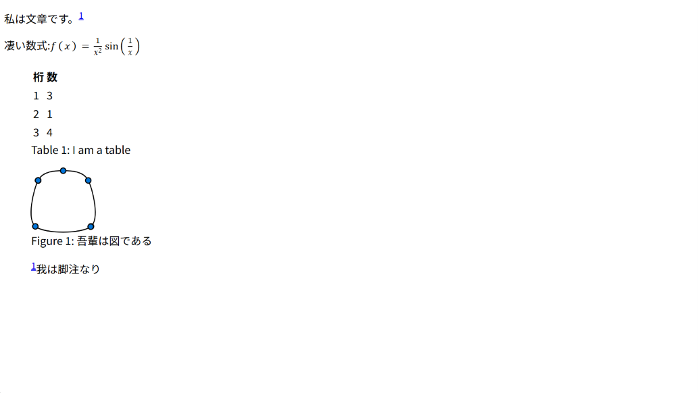
というわけで、HTML出力ができるようになったので、このままブログにして公開します。タイトルは「Wolfram Languageで平面描画を求め、Typstで結果をブログにしてみよう！」にしておきましょうか！
筆者ははてなブログを利用しているのですが、このブログサービスでは出力されたHTMLを直接使うといろいろな問題が発生します。例えば、
実はMarkdown内でHTMLは使用できる。なのでとくに問題はない。
デフォルトの出力だと、html,head,bodyタグといった不必要なタグが出力されてしまう。まだ実験的機能なので、今の段階ではこれを消す方法は提供されていない。なので、Typstで書き出したHTMLをそのままブログに貼り付けると、ブログのHTML構造が崩れてしまう。なので、Typstで書き出したHTMLの中身だけを取り出して、ブログに貼り付ける必要がある。今回は応急処置として、そのまま張り付けると背景が真っ赤になって、警告されるようにしておく。背景が赤いと、ブログのHTML構造が崩れていることが一目でわかるので、Typstで書き出したHTMLの中身とstyleタグだけを取り出して、ブログに貼り付ける必要があることを思い出せるはずである。たぶん。
imgタグのsrc属性に直接画像ファイルを埋め込むと、HTMLが非常大きくなってしまいおそらく文字数制限でエラーがでて上手く表示できなくなる。なので、画像ファイルはブログのサーバーにアップロードして、そのURLをimgタグのsrc属性に指定する必要がある。今回は応急処置として、imgタグのsrc属性に仮のURLを指定しておく。ブログに貼り付けるときは、imgタグのsrc属性をブログのサーバーにアップロードした画像のURLに書き換える必要がある。画像データをHTMLとまとめて上げる方法がない以上、この手順は踏まざるを得ない。
これらの処置を自動的に施すTypstの関数を作ると以下のようになる。
#let show_blog_with_typst(body) = context {
set text(lang: "jp")
// ここにcontextを二重につけてはいけない。
show image: it => {
if target() == "html" {
// TODO:Typst 1.50では、デフォルト動作では画像データ自体をHTMLのimgタグのsrc属性に埋め込む仕様になっている。
// これを回避しているのだが、渡されたsourceをそのままimgタグに埋め込む以外の方法がないため、フォルダー内に別のtypstファイルがあって、それをincludeしている場合などに、相対パスの位置が変わり時々壊れる。
// https://typst.app/docs/reference/foundations/path/ pathをstringに戻せれば、imgタグにstr(path(it.source))のようにして渡すことで相対パスの位置を正しく計算できるの可能性があるが、現状ではそれも不可能なので、仕方なくsourceをそのままimgタグに埋め込む仕様にしている。]
if (it.source.ends-with(".pdf")) {
// PDFを埋め込む場合はembedタグを使う。embedタグはPDFを埋め込むことができるが、imgタグでパスを指定してもPDFを埋め込むことはできない。
html.elem("embed", attrs: (
src: it.source,
style: "max-width: 100%; height: auto;",
))
} else {
html.elem("img", attrs: (src: it.source, style: "max-width: 100%; height: auto;"))
}
} else {
it
}
}
// TODO:html,headやbodyタグを消したいが、Typst 1.50では不可能そうなので応急処置として、そのまま張り付けると背景が真っ赤になって、警告されるようにしておく。背景が赤いと、ブログのHTML構造が崩れていることが一目でわかるので、Typstで書き出したHTMLの中身とstyleタグだけを取り出して、ブログに貼り付ける必要があることを思い出せるはず。
if target() == "html" {
html.elem("div", attrs: (id: "takehere", style: "background: red"))[
#html.elem(
"h1",
)[警告:このTypstで書き出したHTMLはdiv\#takehereの中身とstyleタグだけを取り出して、ブログに貼り付ける必要があります。]
#body
この記事はTypst 1.50の実験的なHTML出力機能を用いて生成されました。
ソースコードのリポジトリは#link("https://github.com/manybear-a1/blog-typst", "こちら")
// 現時点では生成元のTypstファイル名の自動取得は不可能(https://github.com/typst/typst/discussions/2295)
// 生成元のTypstファイル名は
]
} else {
body
}
}
この記事はTypst 1.50の実験的なHTML出力機能を用いて生成されました。
ソースコードのリポジトリはこちら
pdf.attach("file-itself.typ")のようにして元のTypstファイルを添付しておくことはできる。しかしそもそも、pdfファイルにさらに別のファイルが添付できることを知っている人がどれくらいいるだろうか。そして、そのファイルを開けるpdfビューワーがどれくらいあるだろうか。少なくとも筆者は今回調べてみるまで知らなかった。html.frame(cetz.canvas(...))とすることで、cetz.canvasの出力をSVGに変換してHTMLに埋め込むことができる。なお、普通にpngを読み込んでいる場合はこの回避策を用いる必要はなく、そのままimage("path/to/image.png")とすればよい。ただ、画像ファイルの中身をimageタグに埋め込む形で出力されるので、人によっては好ましくない場合があるかもしれない。context周りは非常にややこしいので注意。トラップがいっぱいある。（今回のトラップは、contextを関数の冒頭と、showの後の二回つけてしまうと、エラーがでないのに、出力がおかしくなってしまうことであろう。showの後のcontextは不要である。）